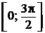

Впишите правильный ответ.
Найдите наменьшее значение функции
на отрезке .

КЭС: 4.2 Применение производной к исследованию функций на монотонность и экстремумы. Нахождение наибольшего и наименьшего значения функции на отрезке
Тип ответа: Краткий ответ
Источник ФИПИ